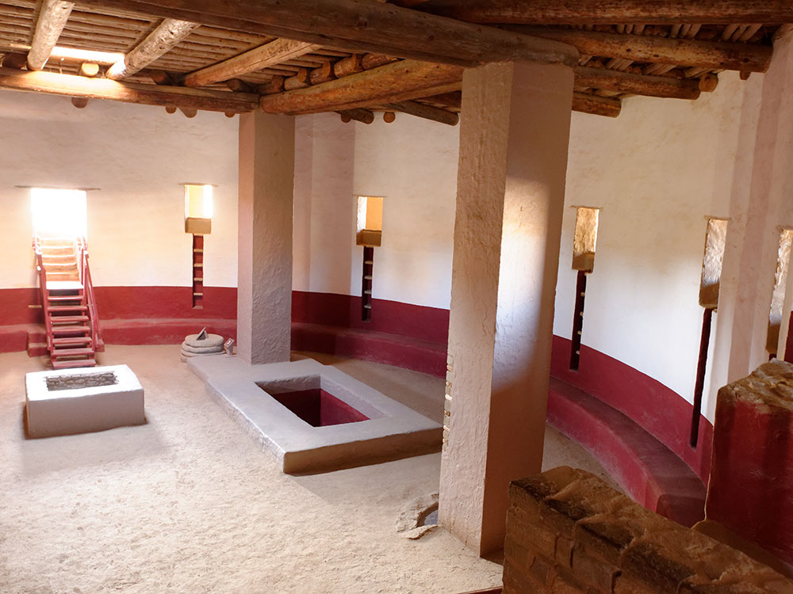
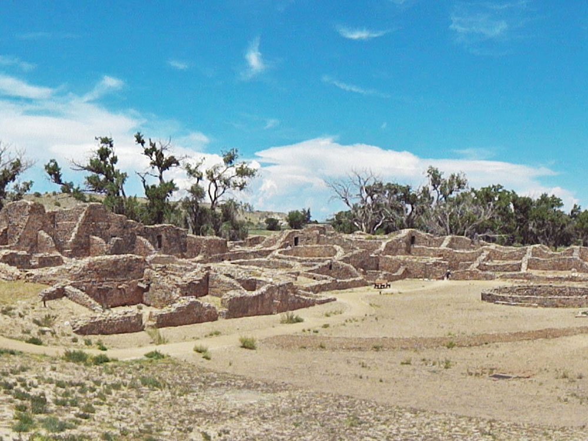
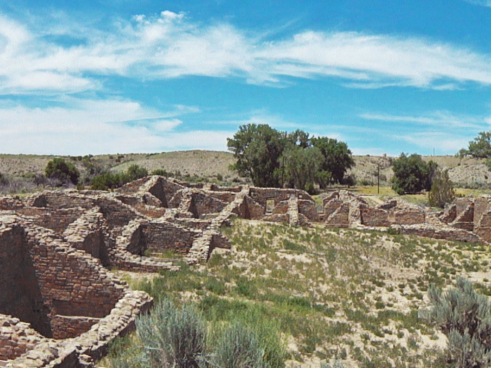

National Monument in northwestern New Mexico, consisting of preserved structures constructed by the Pueblo Indians
General Information
Visitor Center: 9am to 5pm
Closed Thanksgiving, Christmas, and New Year’s Day
How to Get There
From Farmington (16 mi): Take US-64 E/E Broadway Ave toward Bloomfield, continue onto NM-516 E, then turn left onto Ruins Rd and follow it to Aztec Ruins National Monument.
Overview
Aztec Ruins National Monument preserves one of the best-preserved Ancestral Puebloan great houses in the Southwest, built along the Animas River in northwestern New Mexico in the late 1000s and 1100s. Early settlers wrongly believed the Aztecs built the site, and the name stuck. The monument is best known for the West Ruin, a great house of about 400 rooms, some still topped by original roofs, and for its Great Kiva, reconstructed in the 1930s. Aztec Ruins was proclaimed a national monument in 1923 and in 1987 was named a UNESCO World Heritage Site as part of Chaco Culture. Visitors come to walk through intact rooms, step inside the Great Kiva and see how this northern outpost of the Chaco world compares with Chaco Canyon itself.
Access
The monument sits on the northern edge of the town of Aztec, about 15 minutes from Farmington and roughly 45 minutes from Durango, Colorado. Most visitors arrive by car on paved roads, following US-550 or NM-516 to Ruins Road, and there is free parking at the visitor center. The main trail is short, level and accessible to most visitors, and the site makes an easy half-day stop on the way to or from Chaco Culture National Historical Park. The monument is also on the Trail of the Ancients Scenic Byway.
Seasons
The monument is open year-round, and spring and fall bring the most comfortable weather for exploring the grounds. Summer days can be hot with little shade, so early morning is best. Winters are cold with occasional snow, but the site is rarely crowded and the ruins look striking in winter light. Hours are shorter in the cooler months, and some programs and ranger talks are offered mainly in spring through fall.
Things to Do
Explore One of the Best-Preserved Ancestral Puebloan Sites in the Southwest
Aztec Ruins National Monument preserves a remarkable ancestral Pueblo community built by the Ancestral Pueblo people more than 900 years ago. Located in northwestern New Mexico, the monument features ancient masonry structures, ceremonial rooms, and cultural resources that provide insight into the lives of the people who once inhabited the Four Corners region.
Walk Through the Ancient Great House
The monument's centerpiece is the Great House, a massive multi-story complex containing hundreds of rooms constructed with carefully crafted stone masonry. Visitors can walk through reconstructed sections of the structure and explore the layout of one of the largest ancestral communities in the region.
Visit the Restored Great Kiva
One of the monument's most impressive features is the reconstructed Great Kiva, a large ceremonial structure used for community gatherings and religious activities. The Great Kiva offers visitors a rare opportunity to experience the scale and architectural sophistication of Ancestral Pueblo ceremonial spaces.
Learn About Ancient Puebloan Culture
Interpretive exhibits, ranger programs, and educational displays explain the history, culture, architecture, and daily life of the Ancestral Pueblo people. Visitors can gain a deeper understanding of the connections between Aztec Ruins, Chaco Canyon, and other important cultural sites throughout the Southwest.
Explore the Visitor Center Museum
The visitor center features exhibits showcasing artifacts, archaeological discoveries, cultural history, and information about the people who built and occupied the monument. Educational displays help visitors appreciate the significance of this UNESCO-recognized cultural landscape.
Top Trails
Aztec Ruins Self-Guided Trail
Length: Approximately 0.5 miles loop
Elevation Gain: Minimal
Difficulty: Easy
This accessible self-guided trail leads visitors through the Great House, restored Great Kiva, plaza areas, and interpretive exhibits. The route provides an excellent introduction to the monument's history and archaeological significance.
Great Kiva Spur Trail
Length: Included within the main loop
Elevation Gain: Minimal
Difficulty: Easy
A short spur along the monument trail provides access to the reconstructed Great Kiva, allowing visitors to observe one of the most important ceremonial structures in the ancient Pueblo world.
Animas River Overlook Walk
Length: Approximately 0.25 miles round trip
Elevation Gain: Minimal
Difficulty: Easy
This short walk offers views of the surrounding landscape and the nearby Animas River corridor. Visitors can enjoy birdwatching and gain perspective on why ancient communities chose to settle in this fertile region.
Heritage Garden Trail
Length: Approximately 0.25 miles
Elevation Gain: Minimal
Difficulty: Easy
Near the visitor center, visitors can explore heritage gardens featuring traditional crops and plants associated with Pueblo cultures. Interpretive information highlights ancient agricultural practices and the importance of farming within the region.
Visitor Centers
The Aztec Ruins Visitor Center is the starting point for every visit and is where the self-guided trail begins. It houses a museum with artifacts from the site, exhibits on the Ancestral Puebloan people and the monument's history, a short film, a bookstore and restrooms, and rangers can answer questions and suggest a route. The center is open daily with shorter hours than the grounds and is closed on Thanksgiving, Christmas and New Year's Day. Admission to the monument is free.
Camping and Lodging
There is no camping or lodging at the monument. Small hotels, motels and restaurants are available in the town of Aztec, and a wider selection is in Farmington, about 20 minutes away, and Bloomfield. Durango, Colorado, about 45 minutes north, offers many more hotels, inns and restaurants. Camping is available at Navajo Lake State Park, about 45 minutes east, and at other campgrounds around Farmington and Durango. Check each property's website for current availability.
The monument is on the Trail of the Ancients Scenic Byway, one of New Mexico's Scenic Byways.
The property was part of a 160-acre (65 ha) homestead owned by H.D. Abrams, who supported the preservation of the ruins. The H.D. Abrams House in Aztec is listed on the National Register of Historic Places.
This article uses material from the Wikipedia article and official pages for nps.gov, whc.unesco.org, Aztec Ruins National Monument, released under the Creative Commons Attribution-Share-Alike License 3.0. Additional information from the National Park Service.
Featured Trails

Image Placeholder
Aztec West Trail
Difficulty: Easy
A short self-guided loop that leads through ancient rooms and passageways within the Great House.
Image Placeholder
Ancestral Sites Loop
Difficulty: Easy
A loop-style exploration route highlighting key archaeological features including kivas and plazas.
Image Placeholder
Village Ruins Walk
Difficulty: Easy
An easy walk showcasing preserved stone structures, offering insight into daily life in the ancient settlement.
Image Placeholder
Great Kiva Access Path
Difficulty: Easy
A short path leading to the reconstructed Great Kiva, a ceremonial structure central to community life.

.jpg){kind=link}


